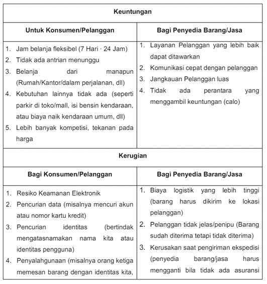
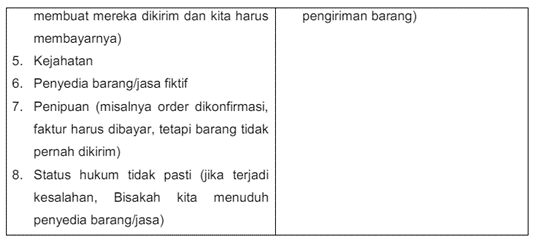
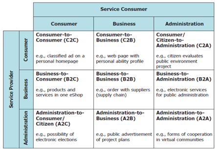
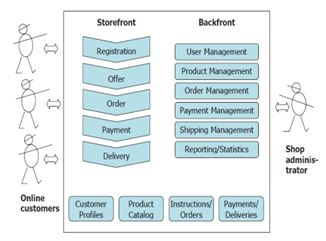

SISTEM E-COMMERCE DAN E-BUSINESS
A. Definisi E-Comerse
Electronic commerce, biasanya ditulis sebagai E-commerce, adalah perdagangan produk atau jasa
menggunakan jaringan komputer, seperti internet. Proses yang ada dalam Bisnis E-Commerce:
-
Penjualan menggunakan website
-
Pesanan dapat dilakukan secara langsung dan otomatis mendapatkan tagihan.
-
Akun pelanggan di Otomasi dengan aman (baik data kartu kredit maupun debit).
-
Penjual berpartisipasi secara langsung untuk menyediakan barang di pasar online kepada konsumen.
-
Penjualan dan Pembelian secara Business to Business.
-
Data dikumpulkan dan digunakan untuk kontak, baik melalui web maupun media sosial.
-
Dapat melakukan pertukaran data elektronik (Business to Business).
-
Penggunaan e-mail dan newsletter untuk informasi promosi kepada konsumen.
-
Dalam memunculkan produk baru dan layanan baru produsen terlibat dalam pre-retailnya.
-
Teknis pembayaran dilakukan secara langsung dengan bekerja sama dengan bank penyedia layanan
transaksi elektronik.
-
Tracking/Pelacakan pembelian barang atau jasa yang dilakukan pelanggan
Pretail (juga disebut sebagai pre-retail, atau pre-Commerce) adalah sub-kategori dari E-commerce dan ritel online untuk memperkenalkan produk baru, layanan, dan merek ke pasar dengan pre-launching secara online, terkadang sebagai reservasi dalam jumlah terbatas sebelum rilis, realisasi, atau ketersediaan komersial.
E-commerce dapat diartikan sebagai pertukaran barang dan jasa yang biasa dilakukan oleh orang atau suatu organisasi yang independen yang didukung oleh penggunaan sistem teknologi informasi dan komunikasi yang kuat dan infrastruktur jaringan standar global secara komprehensif.
Menurut Zwass (2014) menjelaskan e-commerce berasal dari apa yang disebut 5-C-model. yaitu:
-
Commerce
Persayaratan transaksi dan fasilitas transaksi tertentu karena adanya kecocokan antara pemasok dan pelanggan dalam sebuah market place.
-
Collaboration
Individu maupun perusahaan akan membentuk jaringan yang cukup luas karena dihubungkan oleh Web.
-
Communication
Web yang berperan sebagai media interaktif, telah melahirkan sebuah Multiplisitas.produk media.
-
Connection
Jaringan atau networking digunakan untuk melakukan suatu pemasaran produk maupun proses perdagangan dengan melibatkan internet sebagai jaringan utama agar bisa mengakses platform-platform e-commerce.
-
Computation
Infrastruktur daripada suatu jaringan atau networking menjadi suatu utilitas untuk menjalankan proses jual beli melalui e-commerce.
B. Model Bisnis yang Berkaitan dengan E-Commerce
E-commerce pelaku bekerja sama dengan perusahaan tersebut dan menggunakannya sebagai penyedia layanan tertentu.
-
Access Provider berfungsi untuk memastikan pengguna ecommerce bisa akses (teknis) atau tersambung ke internet.
-
Search Engine merupakan perangkat lunak dan sudah pasti harus terkoneksi dengan internet terlebih dahulu agar bisa digunakan. Hal tersebut merupakan langkah pembuka untuk memulai suatu kegiatan yang menggunakan internet jika seseorang mencari peluang bisnis.
-
Online Shop merupakan situs jual beli online. Pada situs tersebut pembeli dapat membeli barang keperluannya secara online tanpa harus bertemu langsung dengan penjual.
-
Content Provider (Penyedia Konten) dapat juga disebut sebagai pedagang informasi yang menawarkan konten secara digital seperti informasi, musik, dokumen, berita.
-
Online Marketplace / Electronic Mall adalah sebuah situs web, di mana pemasok dan calon pelanggan dapat datang bersama-sama seperti di pasar nyata di sebuah kota kecil.
-
Virtual Community (Komunitas Virtual) adalah platform untuk komunikasi dan pertukaran pengalaman. Hal ini mirip dengan club virtual atau asosiasi.
-
Information Broker mengumpulkan dan memberikan informasi, misalnya informasi sehubungan dengan produk, harga, availability atau data pasar, data ekonomis, informasi teknis.
-
Transaction Broker adalah seseorang atau organisasi untuk mengeksekusi transaksi penjualan. Broker transaksi adalah agen yang merupakan ahli di area tertentu dan dapat mengambil alih bagian dari sebuah bisnis.
-
Online service provider/cloud service provider (CSP) menyediakan layanan yang dapat dijalankan secara elektronik, misalnya layanan perangkat lunak aplikasi atau layanan infrastruktur ICT seperti layanan penyimpanan atau pencadangan.
C. Kerugian dan Keuntungan E-Commerce
Dalam hal ini, E-commerce memiliki beberapa keuntungan dan kerugian seperti pada tabel berikut :


D. Jenis Bisnis E-Commerce
Perkembangan sektor produksi karena faktor informasi kurang signifikan dibandingkan dengan perubahan pada teknologi dan perkembangan ekonomi ke dalam bisnis elektronik. Perusahaan (bisnis), lembaga publik (administrasi), serta pribadi (konsumen) dapat menjadi penyedia layanan dan konsumen Jasa.
Berikut adalah gambar yang menunjukkan tiga kelompok yang paling penting dari peserta pasar, bersama dengan kemungkinan koneksi bisnis mereka.

Dari tabel di atas dapat dijelaskan:
-
Consumer to Consumer (C2C): Transaksi barang atau jasa yang dilakukan konsumen ke konsumen. C2C dibagi dalam 2 model yaitu marketplace dan classifed.
-
Consumer to Business (C2B): Transaksi jual beli produk atau jasa dilakukan dari konsumen/perorangan kepada perusahaan. Contoh supir truck/mobil box menawarkan jasa angkut dan antar barang pada aplikasi GoBox/Delivery.
-
Consumer/Citizen to Administrator/Government (C2A): proses transaksi elektronik yang dilakukan individu kepada Lembaga pemerintah. Contoh pembayaran pajak, iuran bpjs secara online.
-
Business to Consumer (B2C): proses transaksi yang dilakukan antara produsen barang atau jasa langsung kepada konsumen akhir, Contoh website bro.do adalah produsen sepatu lokal yang memproduksi sepatu dan menjualnya langsung kepada konsumen dengan stok yang tersedia atau dengan pre-order.
-
Business to Business (B2B): proses transaksi online yang dilakukan antar perusahaan atau jenis usaha barang atau jasa secara tender atau lelang. Contoh perusahaan konveksi membutuhkan bahan baku kain, melakukan tender pengadaan bahan baku kain melalui website eproc.id.
-
Business to Administration/Government (B2A): E-Commerce yang menjual produk atau jasa kepada lembaga pemerintahan melalui sistem tender. Contoh Perusahaan A mengikuti tender online yang diadakan pemerintah daerah DKI Jakarta melalui website lpse.jakarta.go.id.
-
Administration/Government to Consumer (A2C): pemerintah membangun dan menerapkan portofolio teknologi informasi dengan tujuan memperbaiki hubungan interaksi dengan masyarakat. Contoh e-Tilang.
-
Administration/Government to Business (A2B): membentuk lingkungan bisnis yang kondusif secara online agar perekonomian sebuah negara berjalan dengan semestinya. Contoh bisnis atau usaha dapat melaporkan setoran pajaknya kepada KPP secara online melalui website pajak.go.id.
-
Administration/Government to Administration/Government (A2A): kebutuhan interaksi antara satu pemerintah dengan pemerintah lainnya setiap harinya dilakukan secara online. Contohnya sistem online antara pemerintahan pusat dengan kedutaan di luar negri untuk mendata warga negaranya saat di luar negri.
Sebuah toko elektronik (juga sering disebut toko online) adalah sistem perangkat lunak berbasis yang menawarkan barang dan jasa, menghasilkan tawaran/penawaran, menerima pesanan, dan menangani pengiriman dan mode pembayaran. Fungsi yang paling penting dari sebuah toko elektronik sekarang dibahas dengan menggunakan gambar berikut ini:

-
Pendaftaran pelanggan online, seorang pengunjung ke toko elektronik dapat mendaftar dengan mengisi username/email beserta password untuk keamanan lebih biasanya ditambahkan nomor telpon untuk verifikasi dan capcha untuk menghindari autoboot/robot yang registrasi.
-
Profil pelanggan dan administrasi pelanggan, data pribadi customer dimasukkan ke dalam database.
-
Katalog produk dengan katalog listing, produk dan layanan direkam dalam katalog produk, dengan atau tanpa harga yang dikutip.
-
Menawarkan dan memesan, menggunakan komponen perangkat lunak ini, penawaran dapat dihasilkan barang dan Jasa dapat dibeli sesuai kebutuhan.
-
Mode pembayaran, jika pelanggan puas dengan urutannya dan kesepakatan harga dan pengiriman yang terkait, maka dia dapat mengaktifkan pembelian dengan tombol order.
-
Pilihan pengiriman, jenis pengiriman biasanya ditawarkan oleh toko atau penjual, jenis yang ditawarkan beragam pilihan waktu pengiriman, dan asuransi pada saat pengiriman.
-
Ukuran koneksi pelanggan, kontak pelanggan dipertahankan setelah pembelian dengan menawarkan informasi penting barang jual dan jasa.
-
Konstruksi dan operasi, sebuah toko elektronik harus direncanakan dan dipersiapkan secara rinci.
Sistem Pembayaran melalui E-Commerce memerlukan suatu persyaratan yang mencangkup :
-
1. Konfidensialitas untuk menjamin bahwa konsumen, pedagang dan informasi transaksi pembayaran tetap konfidensial.
-
2. Integritas dari semua data yang ditransmisikan melalui jaringan publik seperti internet.
-
3. Otentikasi dari pihak pembeli maupun pihak pedagang.
-
4. Keamanan berkaitan dengan perlindungan atau jaminan keamanan dari pihak-pihak yang tidak bertanggung jawab.
-
5. Mekanisme privacy untuk pertukaran informasi yang sifatnya umum maupun pertukaran data pembayaran.
-
6. Divisibilitas, berkaitan dengan spesifikasi praktis transaksi baik untuk volume besar maupun transaksi skala kecil.
-
7. Interoperabilitas dari perangkat lunak, maupun jaringan dari penerbit kartu kredit dan perbankan.